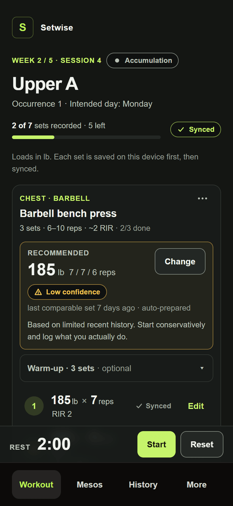
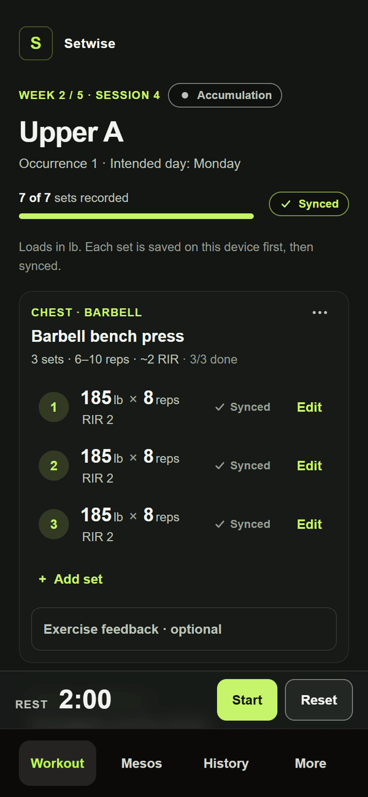

PERSONAL PROJECT / 2026–PRESENT
A workout shouldn’t depend on the Wi-Fi.
Building reliable strength-training software with durable offline logging, history-based recommendations, and careful data boundaries.
The problem
Logging a workout is a small interaction with a surprisingly important constraint: the record needs to survive. A gym connection can disappear mid-session. A useful training application has to respect the work already done.
Setwise brings together training-block planning, workout execution, and progression decisions in a mobile-first application. Reliability is part of the product, rather than a detail added at the end.
Designed for interrupted connections.
The application supports durable offline workout logging and synchronization. Changes need to remain usable during a connectivity interruption and synchronize when the connection returns.
That makes retry behavior and the boundary between local changes and server records central engineering concerns. The goal is a logging flow that reflects the workout, rather than asking the person training to manage the network.
The design question: What happens to someone’s last set when the connection disappears? That question is more useful than assuming every request will succeed.


Recommendations grounded in history.
Setwise uses workout history to suggest loads, repetitions, and reps in reserve. Feedback can support conservative adjustments to training volume, while the user retains control.
This is deterministic domain logic. It is distinct from the AI coding tools used during development, and it should be explainable and testable as software.
Data boundaries deserve the same care.
The stack combines Next.js, React, TypeScript, Prisma, PostgreSQL, and Supabase. Backend services sit alongside relational training data, reviewed SQL migrations, and explicit server authorization.
- Row-level security and server authorization form separate parts of the data-access design.
- CI checks and automated tests verify application behavior and migrations against disposable PostgreSQL databases.
- Documented acceptance criteria distinguish implemented features from work that has completed broader verification.
A project you can inspect.
Setwise is under active development. The public repository contains source, tests, architecture notes, and the evolving roadmap. It is the best place to inspect the implementation and current status.
NEXT PROJECT
Connecting commerce & operations ↗